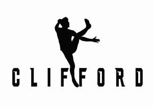
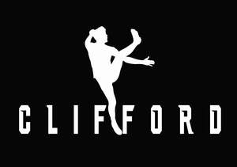

Trade Mark Journal No.2025/042 17 October 2025
UK00004261418 9 September 2025 (16,18,21,25,28)
Mark 1

Mark 2

- Class 16
- Paper, cardboard; printed matter; stationery; instructional and teaching material; books; magazines; brochures; catalogues; posters; calendars; writing instruments; pens; pencils; erasers; rulers; pencil sharpeners; pencil cases; adhesive materials for stationery purposes; stickers; notebooks; diaries; envelopes; folders; binders; plastic bags for packaging; gift wrapping paper.
- Class 18
- Leather and imitations of leather; bags; sports bags; holdalls; kit bags; school bags; rucksacks; backpacks; duffel bags; gym bags; toiletry bags; wallets; purses; luggage; travel bags; suitcases; briefcases; straps for bags; key cases; credit card holders; pouches; belt bags; waist packs.
- Class 21
- Household or kitchen utensils and containers; drinking vessels; drinking bottles; sports bottles; reusable water bottles; flasks; insulated bottles; cups; mugs; tumblers; household containers for beverages; lunch boxes; food storage containers; thermal containers; shaker bottles for drinks.
- Class 25
- Clothing, footwear, headgear; sportswear; leisurewear; jerseys; T-shirts; polo shirts; shorts; tracksuits; jackets; hoodies; sweatshirts; base layers; socks; underwear; rainwear; outerwear; gloves; scarves; sports shoes; trainers; boots; Gaelic football boots; sandals; caps; hats; beanies; bobble hats; visors.
- Class 28
- Games and playthings; toys; soft toys; gymnastic and sporting articles not included in other classes; sports equipment; sporting articles; balls for sports; footballs; Gaelic footballs; training cones; hurdles for training; skipping ropes; gloves for sports; shin guards; protective padding for sports; goal posts; nets for sports; resistance bands; exercise mats; weights; dumbbells; kettlebells; agility ladders; whistles; coaching boards.
Sports Merchandising Ireland Ltd
Representative: HGF Limited